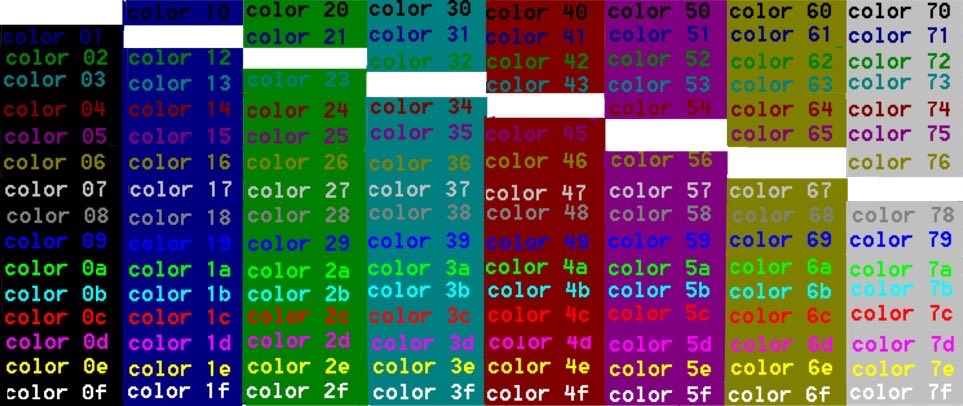
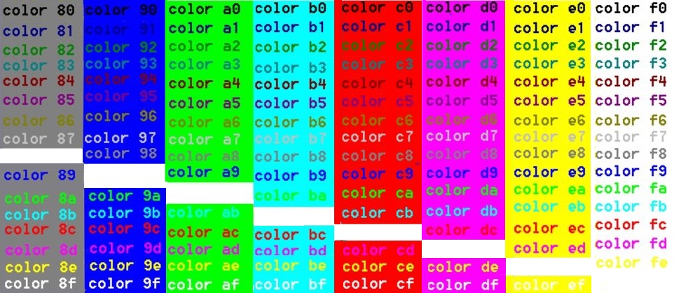

Sets the default console foreground and background colours.
Syntax
COLOR [background][foreground]
Colour attributes are specified by 2 of the following hex digits. There should be no space between the two color numbers.
Each digit can be
any of the following values:
0 = Black
8 = Gray
1 = Blue
9 = Light Blue
2 = Green
A = Light Green
3 = Aqua
B = Light Aqua
4 = Red
C = Light Red
5 = Purple
D = Light Purple
6 = Yellow
E = Light Yellow
7 = White
F = Bright White
If no argument is given, COLOR restores the colour to what it was when CMD.EXE
started.
Colour values are assigned in the following order:
The DefaultColor registry value.
The CMD /T command line switch
The current colour settings when cmd was launched
The COLOR command sets ERRORLEVEL to 1 if an attempt is made to execute the
COLOR command with a foreground and background colour that are the same.
In Windows 10 clean-install versions greater than build 16257 the default colour scheme has been changed to modernize the look of the Windows Console suitable for modern high-contrast LCD displays.
Examples (from Windows 7):


The default terminal color is COLOR 07, white on black
The COLOR command will change the color of all the text in the window.
If the color was successfully changed %ERRORLEVEL% = 0
Background and foreground colors are the same (will fail) = 1
e.g. COLOR 00
In Windows 10 (new build >= 16257) the default color values have been changed to improve legibility of darker colors on modern screens.
For upgraded machines (rather than fresh installs), the Windows Console Colortool can be used to change color schemes.
In PowerShell you will probably need to tinker with the new Colortool values: So up until very recently the console only supported 16 colours at a time. When the PowerShell team decided they wanted a very specific dark blue as the background colour, rather than altering the colour value for dark or light blue, they instead changed dark magenta to blue and used that as the background colour.
COLOR is an internal command.
If Command Extensions are disabled, the COLOR command will not function.
“How much more black could this be?" and the answer is "None...none more black” ~ Spinal Tap
Related:
CMD - Start a new CMD shell
EXIT - Set a specific errorlevel
PowerShell: Write-Host - Write output to the screen (colour can be set for individual strings).
Colour codes - HTML/CSS
Aaron Margosis - Change prompt colors for all Admin level prompts
Color Scheme Designer - Design colour themes
Equivalent bash command (Linux): dircolors - Colour setup for `ls'